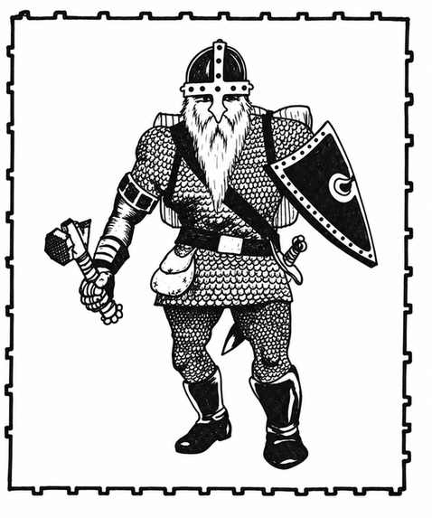

矮人 · Dwarf
 |
|
\* 个别矮人可能拥有灵能能力。
矮人喜欢居住在岩石丘陵。他们通常以氏族为单位聚居；氏族之间并非互相敌对，但彼此竞争。矮人可以同时属于两个或更多职业，例如战士／牧师；双职业等级可能不同。
每群每有 40 名矮人，就有一名 2–6 级战士（掷六面骰决定等级：1 表示 2 级，其余骰值对应等级）。人数达到 160 时，另有一名 6 级战士担任首领、一名 4 级战士担任副手；达到 200 人时，再有一名战士／牧师，其战士等级为 3–6 级、牧师等级为 4–7 级。若遭遇 320 名或更多矮人，还会额外出现：一名 8 级战士、一名 7 级战士、一名 6 级战士／7 级牧师，以及两名 4 级战士／牧师。
若在矮人巢穴遭遇他们，还会有 2–12 名 2–5 级战士、每类 2–8 名 2–4 级战士／牧师；成年男性数量的 50% 为女性，25% 为幼儿。矮人巢穴总是位于坚实岩层中的地下建筑群。
矮人通常装备链甲与盾牌，武器组合如下：
| 武器组合 | 概率 |
|---|---|
| 剑与轻弩 | 15% |
| 剑与长柄武器 | 10% |
| 剑与长矛 | 20% |
| 斧与重弩 | 10% |
| 斧与战锤 | 25% |
| 斧与钉头锤 | 10% |
| 战锤与鹤嘴镐 | 10% |
高等级战士与战士／牧师每有 1 级，就有 10% 概率拥有魔法护甲和／或武器。战士／牧师还须按牧师等级每级 10% 的概率，检定是否额外拥有 1–4 件牧师可用物品（药水、牧师卷轴、戒指、魔杖／法杖／权杖或杂项魔法物品）。所有高于普通等级的矮人都穿板甲并持盾。
矮人有 60% 概率驯养守巢动物：5–20 只狼（25%）或 2–8 只棕熊（75%）。
矮人憎恨地精、兽人和大地精，攻击这些敌人时命中骰获得 +1。巨魔、食人魔与巨人攻击矮人时，命中骰承受 −4 惩罚，这是矮人凭借身材与对付巨型生物的技巧获得的优势。
矮人同时抵抗魔法与毒素，进行豁免检定时视为高于实际等级 4 级。他们能在黑暗中看见 60 尺内的怪物（红外视觉）。凭借采矿技能，他们有 50%–75% 概率察觉向上或向下倾斜的通道、滑动或移动的墙壁与房间、新建结构、大致深度以及异常石工。
矮人会说自己的语言，以及侏儒、地精、狗头人和兽人语；另有 75% 概率会说通用语。
外观。 矮人的肤色通常为深棕褐至浅棕色，脸颊红润，眼睛明亮（几乎不会是蓝色）；头发为棕色、黑色或灰色。衣着偏爱土色，偶尔点缀鲜艳颜色。矮人身高约 4 尺，体格结实健壮，体重至少 150 磅；寿命通常不少于 350 年。
本节内容